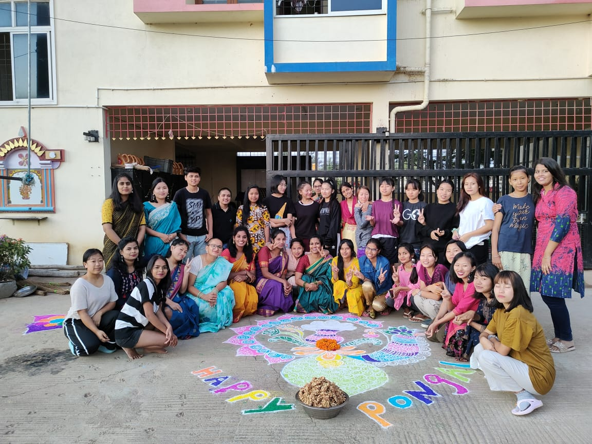

About Us
Started in 2016, Navgurukul runs one-year residential course for students from underserved and diverse communities.Students after pursuing our course are awarded Certificate in Software Programming. The certificate is issued by DGT,
Government of India as detailed by the MOU


TEAM

Abhishek Gupta
CEO & Co-founder
IITD 13 CS Graduate. Co-founded Zumbl.com and FranklyMe.
Zumbl was acquired and FranklyMe raised more than 2.6M$ from
Matrix Partners and others. Was working with Education
Department, Delhi Government before NavGurukul.